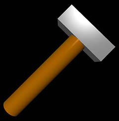

compound¶
A compound object is made from two or more other objects. A compound object is a single object, and can be manipulated as such. Once created, the relative positions of the objects in the compound cannot be altered, but the compound as a whole can be moved.
- compound(objectlist, pos=vec(3, 2, 0), axis=vec(1, 1, 0))¶
- Parameters:
first_argument (list) – List of objects to be compounded. See code example below.
origin (vector) – Location of the pos of the compound object. Default is center of bounding box.
pos (vector) – Position of the compound object. Default <0,0,0>. Changing pos moves the whole object.
axis (vector) – Magnitude is ignored; only direction is used. Default <1,0,0>.
color (vector) – Modifies color of entire compound object. Default color.white
size (vector) – Dimensions of bounding box. Default <1,1,1>. Changing size does not change axis, and vice versa.
The hammer in the image at the top of this page is created by this code:
handle = cylinder( size=vec(1, 0.2, 0.2), color=vec(0.72, 0.42, 0) )
head = box( size=vec(0.2, 0.6, 0.2), pos=vec(1.1, 0, 0), color=color.gray(0.6) )
hammer = compound( [handle, head] )
hammer.axis = vec(1,1,0)
Attributes used less often:
- compound(canvas=mycanvas, emissive=False)
- Parameters:
opacity (scalar) – Default 1.0; Range 0-1.
shininess (scalar) – Default 0.6; Range 0-1.
emissive (boolean) – Default False. Object glows, losing all shading, if True.
visible (boolean) – If False, object is not displayed. Default: True
texture (class element or path) – Texture of entire compound. Default None.
canvas (object) – Default is scene.
make_trail (boolean) – If True, object leaves a trail when moved.
up (vector) – A vector perpendicular to the axis.
Restrictions on compounds¶
The following objects cannot be compounded: labels, lights, curves, helices. All of the objects to be compounded must be in the same canvas, and the compound itself must also be in the canvas. It is not possible to clone a compound to a different canvas, but a compound can be cloned to the same canvas to make multiple copies.
Compound and world coordinates¶
If a compound object has been moved, rotated, or resized, its internal coordinates may not be the same as world coordinates. If v1 was, for example, the original location of one of the objects in a mycompound:
newv1 = mycompound.compound_to_world( v1 ) gives the new location in world coordinates.
v2 = mycompound.world_to_compound( newv2) converts world coordinates to internal coordinates.
See also
Rotation; color; emissive; opacity; Leaving a trail; canvas; textures;